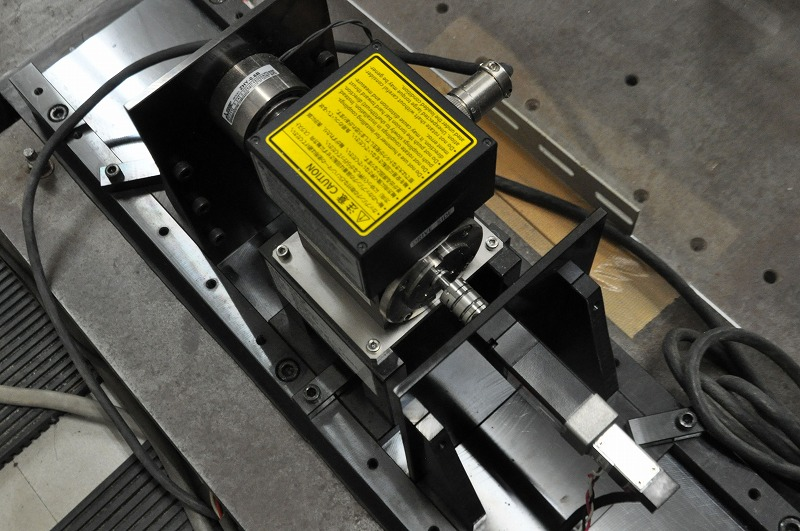

PMモータ
|  | |
電圧飽和を考慮したACサーボシステム
産業界で幅広く使用されているACサーボシステムには急峻かつ安定な応答が常に求められています。 ACサーボシステムは一般に複数のPI制御器で構成されていますが，重負荷での高速運転時や急加速運転時には，リミッタによりPI制御器の出力が飽和します。 このとき，従来のサーボシステムでは応答が振動的になることがあります。 インバータの電圧飽和時やトルク電流飽和時でも安定かつ高速な応答を得るために，本研究室では操作量飽和を考慮したサーボシステムや加速トルクを考慮したインバータ変調法など数多くの提案をしております。
SPMモータの電流微分項を考慮した弱め磁束制御
製造装置や輸送装置などに用いられるACサーボモータには高速応答かつ安定した動作が求められています。 また，モータを高速領域で駆動するためには，電圧飽和抑制に弱め磁束制御を用いる必要があります。 本研究室では，弱め磁束制御のd軸電流指令の演算に電流微分項を考慮することで，速度応答を保ったまま，過渡状態でのd軸電流量を低減する制御法について研究を行っています。
ACサーボモータの微小距離超高速位置決め制御
現在の製造分野における高速位置決めにおいては，安価で容易に位置決め制御を実現できるステッピングモータを用いるのが一般的となっています。 しかし，近年の半導体素子の微小化により，更なる高精度，微小距離での高速位置決めが求められています。 ステッピングモータを用いてより高速かつ正確な微小距離の位置決め制御を行う場合，モータサイズの増大やハイコスト化に繋がるため，安価に制御系が実現できるというステッピングモータの利点が失われてしまいます。 そのため，よりローコスト，省スペースで微小距離高速位置決めを行うために，汎用性が高く，高出力密度を持つAC サーボモータ-SPMSM (Surface Permanent Magnet Synchronous Motor)-をステッピングモータの代わりに用いた高速位置決め制御の実現が期待されています。 そこで本研究室では，ACサーボモータによる微小距離超高速位置決め制御に関する研究を行っており，現在，力積に基づいた動作アルゴリズムの検討を行っています。
永久磁石同期電動機の温度推定
近年、産業用ロボットの小型化に伴い、永久磁石同期電動機(Permanent Magnet Synchronouse Motor)の小型化が求められています。 小型化したモータにより、大トルクを得る方法として電流を増加させることが挙げられます。 しかし、電流の増加によりモータ内部の温度が上昇し、永久磁石の不可逆減磁や巻線部の絶縁破壊の要因となります。 そのため、モータの温度を管理することが望まれますが、小型化したモータに温度センサを設置することは現実的ではありません。 そこで本研究室では、既存のACサーボシステムに実装可能な温度推定システムに対する研究を行っています。